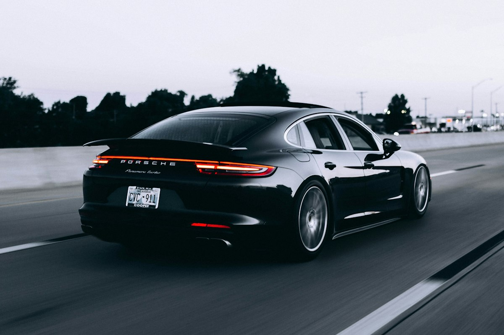

Daily Drivers
Keep your commuter looking sharp through pollen season, parking lots, and winter road treatment.
Leesburg & Loudoun County
Protect your paint. Keep the gloss. Spend less time washing. Leesburg Ceramic Coating delivers professional ceramic coating for drivers across Leesburg and Loudoun County.
Final pricing depends on vehicle size and paint condition — free quotes, no hard sell.
Daily drivers, new cars, leases, and weekend cars across Leesburg and nearby Loudoun County.
Keep your commuter looking sharp through pollen season, parking lots, and winter road treatment.
Lock in factory paint early — fewer swirls, easier handovers, and lasting gloss.
Show-ready depth for cars that deserve more than a spray wax.
Proudly serving Leesburg, Lansdowne, River Creek, Potomac Station, Exeter, Raspberry Falls, downtown Leesburg, Ashburn edge, and nearby Loudoun by arrangement.
Hydrophobic beads, careful prep, and deep showroom gloss — the results ceramic coating is known for.


Three clear steps from first call to cured, protected paint.
We review paint condition, how you drive, and your longevity goals — then match the right package.
Wash, decontaminate, and correct swirls as needed so ceramic bonds to clean, refined paint.
Professional ceramic application, proper cure time, and an aftercare guide for lasting results.
Essential, Premium, and Ultimate options — matching condition, driving, and how long you want protection to last.
Solid single-layer protection for newer cars with light swirls.
Multi-stage correction and premium ceramic for daily drivers.
High-end multi-year system with glass & trim options.
Call Leesburg Ceramic Coating for a free quote. We’ll help you choose the right package for your vehicle.